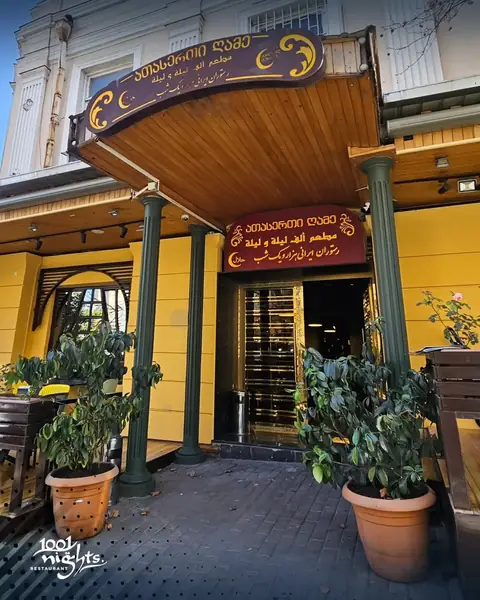
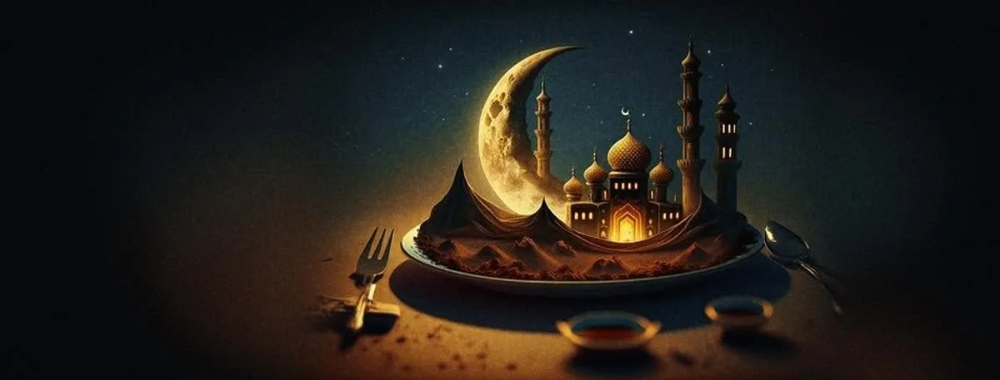
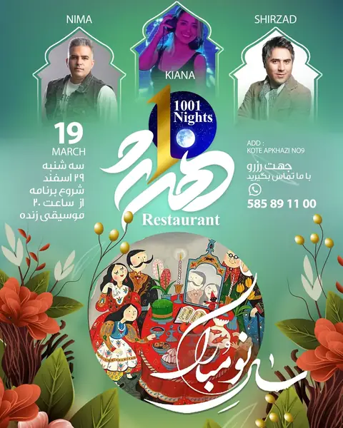
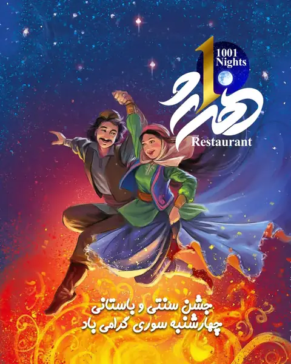

ქაბაბ ბარგი
کباب برگ
საქონლის ფილე თხელ ფურცლებად, ღამით ხახვის წვენსა და ზაფრანაში დამარინადებული, ზაფრანის კარაქით.

სპარსული სამზარეულო · თბილისი, 2012 წლიდან
ნახშირზე შემწვარი ქაბაბი, ხორეშთი ქვაბიდან, ბრინჯი ოქროსფერი ქერქით. ძველი ქალაქის გულში, კოტე აფხაზის ქუჩაზე.
კოტე აფხაზის ყვითელი ფასადის უკან არის დარბაზი, სადაც ათ წელზე მეტია ერთი და იგივე ხდება: მაყალი შუადღიდან იწვის, ქვაბები დილიდან ნელ ცეცხლზე დგას, და საღამოს რომელიღაც წუთს ვიღაც სიმღერას იწყებს.
ჩვენი სამზარეულო ისპაჰანიდან და შირაზიდან მოვიდა — და თბილისისკენ მიმავალ გზაზე ის აიღო, რაც მოეწონა: ლევანტის სუმახი, ყურის ბაჰარათი, თონის ქართული პური. რაც რჩება, სპარსული წესია: არცერთი სანელებელი წინ არ იწევს, ყველაფერს დრო ეძლევა.

თუ პირველად ხართ ჩვენთან, ეს შეუკვეთეთ. დანარჩენი მენიუშია.
کباب برگ
საქონლის ფილე თხელ ფურცლებად, ღამით ხახვის წვენსა და ზაფრანაში დამარინადებული, ზაფრანის კარაქით.
قورمهسبزی
ეროვნული კერძი: შვიდი მწვანილი, წითელი ლობიო და ცხვარი, ხმელი ლაიმით.
ماهیچه
ცხვრის წვივი, ოთხი საათი ზაფრანასა და ხახვში, სანამ ძვალს არ მოსცილდება.
کشک بادمجان
ღია ცეცხლზე შემწვარი და კრემად დაფშვნილი ბადრიჯანი, დადუღებული შრატით, პიტნის ზეთით, ნიორითა და შემწვარი ხახვით.

სპარსული ანდაზა
ნოვრუზზე, ჩარშანბე სურზე და სრულიად ჩვეულებრივ პარასკევებზე ჩვენთან ცოცხალი მუსიკა ჟღერს. ამ საღამოებზე ადრე დაჯავშნეთ — დარბაზი სწრაფად ივსება.

სამი მუსიკოსი, ერთი საღამო, მთელი სახლი: სპარსული კლასიკა ცოცხლად 20:00 საათიდან, სამზარეულოს ნოვრუზის მენიუთი.
ადგილის დაჯავშნა
ცეცხლის დღესასწაული ნოვრუზამდე: აჯილ-ე მოშქელ-გოშა, მუსიკა და მენიუ, რომელიც ზამთარს აცილებს.
ადგილის დაჯავშნაორი წუთი მეტეხის ხიდიდან, ძველი ქალაქის შუაგულში. ვემსახურებით შიგნითაც და გარეთაც — დიდი კომპანიისთვის ჯობია მოკლედ დაგვირეკოთ.
| ორშ – ხუთ | 11:00 – 23:00 |
|---|---|
| პარ – შაბ | 11:00 – 24:00 |
| კვირა | 11:00 – 23:00 |